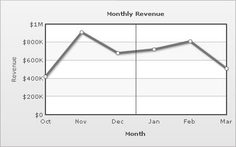
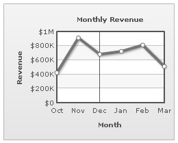
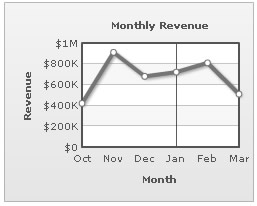
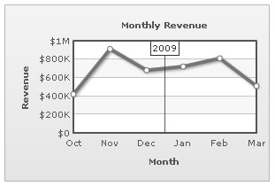
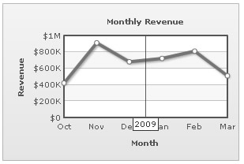
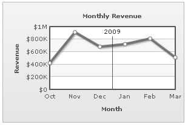

XML Attributes for Vertical Separator Lines |
|||||||||||||||||||||
| vLines are vertical (or horizontal in case of bar charts) separator lines that help you separate blocks of data. They can be placed between any two data points, even at irregular intervals. | |||||||||||||||||||||
|  | |||||||||||||||||||||
| The XML for the same is: | |||||||||||||||||||||
| <chart caption='Monthly Revenue' xAxisName='Month' yAxisName='Revenue' numberPrefix='$' showValues='0'> <set label='Oct' value='420000' /> <set label='Nov' value='910000' /> <set label='Dec' value='680000' /> <vLine/> <set label='Jan' value='720000' /> <set label='Feb' value='810000' /> <set label='Mar' value='510000' /> </chart> |
|||||||||||||||||||||
| As you can see, a vertical separator line is introduced in the chart using the <vLine> element between those <set> elements, where you want it to be placed. | |||||||||||||||||||||
| Configuring the position of vertical line | |||||||||||||||||||||
By default, when you add a vLine to the chart, it appears between the two data points visually. You can, however, place it anywhere between those two data points by setting the value of linePosition attribute between 0 and 1. 0 places the vertical line at the position of previous data and 1 at the next data. Example: |
|||||||||||||||||||||
| <chart caption='Monthly Revenue' xAxisName='Month' yAxisName='Revenue' numberPrefix='$' showValues='0'> <set label='Oct' value='420000' /> <set label='Nov' value='910000' /> <set label='Dec' value='680000' /> <vLine linePosition='0'/> <set label='Jan' value='720000' /> <set label='Feb' value='810000' /> <set label='Mar' value='510000' /> </chart> |
|||||||||||||||||||||
| This results in: | |||||||||||||||||||||
|  | |||||||||||||||||||||
| Setting linePosition to 1 in the same XML results in: | |||||||||||||||||||||
|  | |||||||||||||||||||||
| Adding labels to vertical lines | |||||||||||||||||||||
| You can add a label to vertical line by setting <vLine label='Your text' ..>. An example is shown below: | |||||||||||||||||||||
| <chart caption='Monthly Revenue' xAxisName='Month' yAxisName='Revenue' numberPrefix='$' showValues='0'> <set label='Oct' value='420000' /> <set label='Nov' value='910000' /> <set label='Dec' value='680000' /> <vLine label='2009'/> <set label='Jan' value='720000' /> <set label='Feb' value='810000' /> <set label='Mar' value='510000' /> </chart> |
|||||||||||||||||||||
| This results in: | |||||||||||||||||||||
|  | |||||||||||||||||||||
| Configuring Label Position | |||||||||||||||||||||
| The label can be configured to show either at the top of the canvas (labelPosition='0') or at the bottom (labelPosition='1') or anywhere in between. To show the label at bottom of canvas, we use the code below: | |||||||||||||||||||||
| <chart caption='Monthly Revenue' xAxisName='Month' yAxisName='Revenue' numberPrefix='$' showValues='0'> <set label='Oct' value='420000' /> <set label='Nov' value='910000' /> <set label='Dec' value='680000' /> <vLine label='2009' labelPosition='1'/> <set label='Jan' value='720000' /> <set label='Feb' value='810000' /> <set label='Mar' value='510000' /> </chart> |
|||||||||||||||||||||
| This results in: | |||||||||||||||||||||
|  | |||||||||||||||||||||
| Turning Label borders on/off | |||||||||||||||||||||
| The label can be configured not to have any borders, either at chart level by setting <chart showVLineLabelBorder='0' ..> or at individual vLine level by setting <vLine showLabelBorder='0' ..>. This results in: | |||||||||||||||||||||
|  | |||||||||||||||||||||
| Label alignment configuration | |||||||||||||||||||||
| The label can be configured to anchor at left, center (default) or right using <vLine ... labelHAlign='left'...> Shown below are examples: | |||||||||||||||||||||
|
|||||||||||||||||||||
Similarly, the vertical position can be set as top, middle (default) or bottom as value of labelVAlign attribute. |
|||||||||||||||||||||
|
|||||||||||||||||||||
| Customizing the looks of the separator line | |||||||||||||||||||||
| The looks of the vertical separator line can be customized using the attributes of the <vLine> element given below: | |||||||||||||||||||||
|
|||||||||||||||||||||
| <vLine color='999999' thickness='2' alpha='60' /> | |||||||||||||||||||||
| Dashed vertical separator lines | |||||||||||||||||||||
The vertical separator lines can be made dashed using dashed='1' in the <vLine> element. The dash properties - dash length and dash gap can be customized using the dashLen & dashGap attributes respectively. |
|||||||||||||||||||||
| <vLine dashed='1' dashLen='2' dashGap='2'/> | |||||||||||||||||||||
| Using Styles to animate vertical separator lines | |||||||||||||||||||||
| Animation effects can be applied to the vertical separator lines using STYLES. The following XML would animate the y-Scale of the separator lines. | |||||||||||||||||||||
<chart caption='Monthly Revenue' xAxisName='Month' yAxisName='Revenue' numberPrefix='$' showValues='0'> |